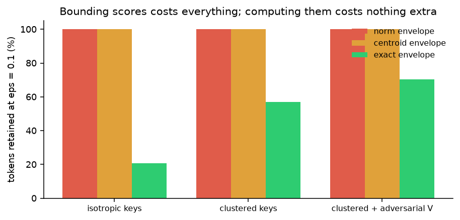
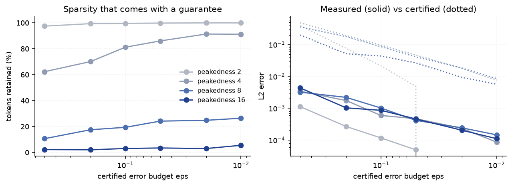
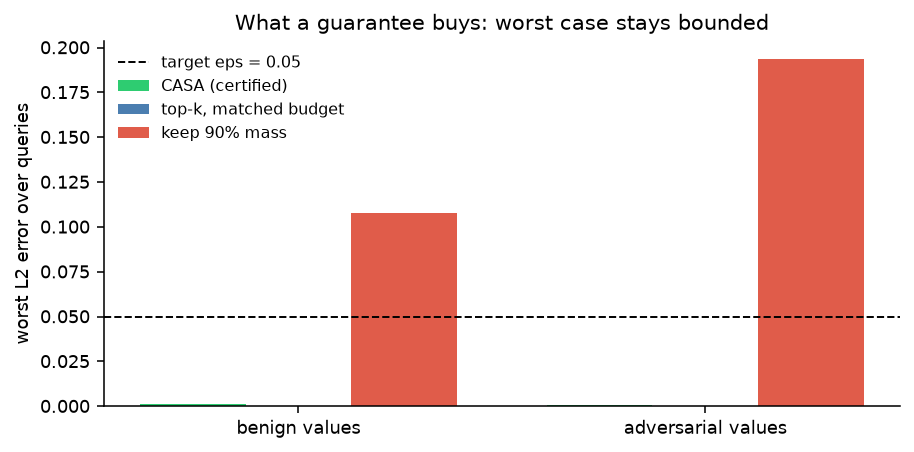

Section 1The problem this solves
Every fast-attention and context-pruning system in production answers the same question with an anecdote. CASA replaces the anecdote with a number. Given a tolerance ε it
- finds the fewest key blocks whose pruned output is provably within ε of the exact output (L2, in the units of the value vectors),
- returns the output and a certificate: a deterministic upper bound on the error, plus the witness needed to re-derive it,
- refuses to prune when nothing can be certified, instead of quietly breaking the promise
(
cert.fallback == True).
The bounds hold for every query, key and value set. A reviewer holding the tensors can re-derive the guarantee in milliseconds, and 7/7 tampering attempts are caught. Two settings are governed by the same theorem:
| Setting | What is dropped | What the certificate buys |
|---|---|---|
| Attention | key blocks | bounded deviation of the head’s output |
| Retrieval (RAG) | retrieved chunks | bounded drift of the softmax-weighted context vector |
Section 2Notation and Theorem 1
Let q ∈ R^d, keys k_i, values v_i ∈ R^m, scores s_i = ⟨q, k_i⟩/√d,
p = softmax(s), and the exact (“dense”) output
o = Σ_i p_i v_iA pruner keeps S ⊆ [N], drops D = [N] \ S, and renormalizes over S:
o_S = Σ_{i ∈ S} p^S_i v_i , p^S_i = e^{s_i} / Z_S , Z_S = Σ_{i ∈ S} e^{s_i}and τ = 1 − Z_S/Z is the dropped probability mass.
For any reference vector c, with D_S = max_{i∈S} ‖v_i − c‖ and
D_D = max_{i∈D} ‖v_i − c‖,
‖o_S − o‖₂ ≤ τ · ( ‖o_S − c‖ + D_D ) ≤ τ · ( D_S + D_D ) ≤ 2 τ D
where D = max_i ‖v_i − c‖Since Z_S = (1−τ) Z, for i ∈ S we have p^S_i = p_i/(1−τ). Put
d_i = v_i − c. Then
o_S − o = Σ_{i∈S} p^S_i d_i − Σ_i p_i d_i
= Σ_{i∈S} p^S_i d_i − (1−τ) Σ_{i∈S} p^S_i d_i − Σ_{i∈D} p_i d_i
= τ (o_S − c) − Σ_{i∈D} p_i d_iNow ‖o_S − c‖ ≤ Σ_{i∈S} p^S_i ‖d_i‖ ≤ D_S and
‖Σ_{i∈D} p_i d_i‖ ≤ Σ_{i∈D} p_i ‖d_i‖ ≤ τ D_D. Add the two. ∎
Three remarks that matter for how the result is read
The bound is tight to a factor of 2, and the factor is real. Both o_S and o are convex
combinations, so no bound of this shape can be smaller than τD. The factor 2 is the price of comparing two
differently renormalized mixtures, and it is attained: two tokens, one kept with value +D/2·u and one dropped
with value −D/2·u at mass τ = 1/2, gives error exactly τ(D_S + D_D).
The reference c is a free tightening knob. Choosing c = mean(v) removes the common
value offset and shrinks both radii; reference="global_mean" is the default, reference="zero"
is the plain 2τ max‖v_i‖.
Nothing about the data is assumed. The bound is a statement about geometry: how far the dropped values sit from the reference, and how much probability mass left. That is exactly why it cannot be fooled (§7, E4).
Section 3Theorem 2: computing τ without reading the dropped tokens
Theorem 1 needs τ, and computing τ naively means scoring every token. Partition the sequence
into blocks g of size n_g and let u_g be any upper bound on
max_{i∈g} s_i. For S a union of whole blocks and m_S = max_{i∈S} s_i (exact, only
retained scores needed):
Z_D = Σ_{g∈D} Σ_{i∈g} e^{s_i} ≤ Σ_{g∈D} n_g e^{u_g} =: exp(dropped_logmass)and since Z ≥ Z_S ≥ e^{m_S},
τ ≤ τ̄ := min( 1, exp(dropped_logmass − m_S) ) (sum form)e^{s_i} ≤ e^{u_g} inside block g, so each block mass is at most
n_g e^{u_g}; sum over dropped blocks. For the denominator, Z contains Z_S, which
contains the single term e^{m_S}. ∎
Dropping block sizes gives the cruder max form τ ≤ min(1, N_D e^{u_D − m_S}). The sum form is never worse
and is what the certifier uses. Dropped keys and values are never read individually: each dropped block contributes one
scalar, log n_g + u_g. Combining the two theorems gives the certificate CASA emits —
‖o_S − o‖₂ ≤ τ̄ · (D_S + D_all) , τ̄ ≤ 1— from (i) exact scores of retained tokens, (ii) one log-mass scalar per dropped block, (iii) the scalar value radius
D_all.
Section 4Where the bound comes from, and a useful negative result
Theorem 2 accepts any u_g. Three schemes ship:
| Scheme | u_g | What the index must store |
|---|---|---|
"exact" | exact block max of the scores | nothing extra (default) |
"norm" | ‖q‖ max_{i∈g}‖k_i‖ / √d | one float per block |
"centroid" | (⟨q,μ_g⟩ + ‖q‖ r_g) / √d | centroid + radius per block |
The interesting result is that the two envelope-only schemes are vacuous at d = 64, and the reason is a scaling
argument rather than a tuning failure. An envelope has to hedge a d-dimensional residual, so its slack grows like
‖q‖ r_g — Θ(d) for isotropic keys — while the spread of the true scores grows only like Θ(√d). At d = 64 the
hedge swamps the signal. Retention at ε = 0.1 over 1024 tokens:
| Key space | norm envelope | centroid envelope | exact scores |
|---|---|---|---|
| Isotropic Gaussian keys | 100% | 100% | 20.8% |
| Clustered keys | 100% | 100% | 57.0% |
| Clustered keys, adversarial values | 100% | 100% | 70.3% |
So CASA defaults to scheme="exact". That is a deliberate and honest choice: on current hardware the score
pass is the same order as the value pass, so bounding scores instead of computing them buys nothing and loses the ability
to certify anything. The envelope schemes are kept because they are the correct baseline for a future index that can
bound Z_g directly — a sketch, an LSH bucket, a learned quantizer — rather than bounding each score inside the
block. That is the research question this negative result points at, not a solved one. Note also that retention rises with
value difficulty (20.8% → 70.3%): the certificate correctly charges more when values are hostile.

Section 5Algorithm
def certified_sparse_attention(q, K, V, block_size=16, eps=0.05, ...):
s = K @ q / sqrt(d) # one score pass
envelope = block_bounds(q, K, block_size, scheme) # per-block u_g
order = argsort(-envelope) # most promising first
for k in 1..G: # all prefixes at once
S = first k blocks in `order`
m_S = max(s[S]) # exact, retained only
lse_D = logsumexp over dropped blocks of (log n_g + u_g)
tau = min(1, exp(lse_D - m_S)) # Theorem 2
bound = tau * (D_S + D_all) # Theorem 1
k* = smallest k with bound <= eps # minimality
out = renormalized attention over S(k*) # reuse `s`
return out, Certificate(...) if k* exists else (dense, fallback certificate)- Cost
O(Nd + Nm + G log G): one score pass, one value pass, one sort. Every prefix is evaluated elementwise in NumPy — there is no Python loop over blocks. - Anytime: the whole retention/error frontier is a by-product, so a caller with a latency budget reads
pattern.curveand takes the cheapest prefix that meets its tolerance. - Minimality is part of the claim: the returned pattern is the smallest certifiable prefix in the block
ordering, and the verifier re-checks that one fewer block fails (
minimal_for_order). - Honest fallback: if no prefix certifies, the output is dense attention and the certificate says
fallback=True, feasible=False. No silent guarantee-breaking.
Section 6The certificate, and three levels of assurance
{
"eps": 0.05, "error_bound": 0.0411, "tau_bound": 0.0142,
"n_total": 2048, "n_retained": 496, "n_dropped": 1552,
"block_size": 16, "blocks_kept": 31, "scheme": "exact", "reference": "global_mean",
"max_kept_score": 12.83, "D_kept": 1.41, "D_all": 1.48, "dropped_logmass": 8.26,
"retained": [0, 3, 5, ...], "retained_digest": "9f2c…",
"q_digest": "4b71…", "k_digest": "c0ae…", "v_digest": "1d83…",
"feasible": true, "fallback": false, "measured_error": 0.0006,
"version": "casa-1.0", "created_at": "2026-11-04T09:12:41Z"
}| Level | Check | Needs | What it detects |
|---|---|---|---|
| 1 | cert.check_arithmetic() | nothing but the certificate | internally inconsistent or over-claimed numbers |
| 2 | cert.matches_inputs(q,K,V) | the tensors | a certificate issued for a different problem |
| 3 | verify_certificate(cert,q,K,V) | the tensors | a wrong bound, a non-minimal pattern, a dishonest measured_error |
The verifier shares no code with the prover except the digest routine: it recomputes the retained set, the envelopes,
τ̄, the bound, and — by running dense attention — the true error. CertificateLedger hash-chains
certificates into JSON Lines so a run cannot be edited afterwards, and verify_ledger re-checks the chain plus
every entry’s arithmetic offline.
On a valid certificate: 7/7 mutations rejected (inflated ε, shrunk bound, shrunk τ̄, dropped retained token, swapped
retained token, zeroed bound, a measured_error inflated 5×), a foreign (q,K,V) rejected, and a
1e−12 edit to a single key entry rejected. Detection rate 1.00. The inflated-ε case is caught by the
minimality check rather than the arithmetic: the numbers stay self-consistent, but the retained set is then larger
than the cheapest certifiable one.
Section 7Experiments
Seed 20261204, CPU only, 15.5 s total. Synthetic problems: keys and queries unit-variance Gaussian;
query_scale multiplies the query norm and therefore controls attention peakedness (score standard deviation =
query_scale); values N(0, 1/m) so that ‖v‖ ≈ 1.
E1 — the theorem cannot be violated by a knob setting
1350 certificates over 54 configurations (3 schemes × 3 block sizes × 2 key geometries × 3 peakedness levels, random ε, N up to 1024):
| Bound violations | 0 |
| Independent verifier failures | 0 |
| Worst measured / bound ratio | 0.76 |
The 0.76 matters: at least once a real error used 76% of its certified budget, so the bound is doing work rather than sitting trivially far away.
E2 — what a guarantee costs, as a function of peakedness
Retention (%) at 2048 tokens, block_size = 16, exact scores:
| ε | peakedness 2 | 4 | 8 | 16 |
|---|---|---|---|---|
| 0.5 | 97.5 | 62.4 | 10.7 | 2.3 |
| 0.2 | 99.4 | 70.2 | 17.6 | 2.1 |
| 0.1 | 99.6 | 81.2 | 19.4 | 3.1 |
| 0.05 | 99.9 | 86.1 | 24.2 | 3.5 |
| 0.02 | 100 | 91.4 | 24.9 | 3.1 |
| 0.01 | 100 | 91.3 | 26.5 | 5.6 |
Two regimes, stated plainly. A flat head (peakedness 2) cannot be pruned within any useful L2 tolerance: the mass is spread so widely that any block you drop is worth a large share of the output, and CASA keeps everything. A selective head (peakedness 8–16) is pruned to 2–26% of tokens with a certificate. Measured errors at those settings are 1e−4 to 4e−3, i.e. 2–20% of the output norm.
This is the honest headline: certification costs whatever the attention distribution dictates, and it will tell you when the answer is “do not prune”. A method that always reports 90% savings is not measuring the same thing.

E3 — how conservative is it?
| Measured / certified | value |
|---|---|
| mean | 0.036 |
| median | 0.032 |
| p95 | 0.064 |
| max | 0.073 |
The bound is ~28× above the observed error on average, and never below it. Relative error of the pruned output is 0.34%
(mean) and 1.2% (p95) of ‖o‖. This gap is the price of assuming nothing about the data: Theorem 1 is a worst
case over value geometry, and E4 shows how easily that worst case is reached deliberately.
E4 — what heuristics do at the same budget
ε = 0.05, 30 queries per cell, 1024 tokens.
| Method | Retention | Median error | Max error | Violations of ε |
|---|---|---|---|---|
| CASA, benign values | 21.6% | — | 0.0013 | 0/30 |
| top-k at matched budget | 21.6% | 6e−8 | 1.9e−6 | 0/30 |
| keep 90% of mass | 0.27% | 0.048 | 0.108 | 14/30 |
| CASA, adversarial values | 41.1% | — | 0.0005 | 0/30 |
| keep 90% of mass, adversarial | 0.28% | 0.055 | 0.194 | 17/30 |
1. Probability mass is not an error budget. Keeping 90% of the softmax mass can move the output by 0.19 — nearly 4× the tolerance a practitioner would ask for — because the mass sits in the top 3 tokens while the value information does not. The heuristic reports “90% of the attention retained”, and that number is true and useless.
2. Certification is invariant to value geometry. Inflating the values of mid-ranked tokens 12× (tokens a mass
heuristic cannot even see) leaves CASA’s error at 0.0005 and its guarantee intact, while the mass heuristic’s worst case
grows from 0.108 to 0.194. Theorem 1 charges for D_all, so the certificate notices what the heuristic cannot.
3. Calibration does not substitute for a proof. Choosing the most aggressive top-k budget whose worst error on 10 calibration queries stays under ε gives budget 2% here; on 20 held-out queries that costs 0 violations on benign values (worst 0.0074) but 1/20 violations and a worst error of 0.097 (2× the target) when values are adversarial. Calibration is a bet on the test distribution. CASA needs no calibration and cannot lose that bet.
On benign data, top-k at the matched budget is more accurate than CASA chooses to be (1.9e−6 vs 0.0013), because
CASA stops at the tightest pattern it can certify, not the tightest it can achieve. Anyone who can afford a verification
pass should run audit=True and use the measured error; the certificate is what you have when you cannot.

E6 — certified context pruning for RAG
256 retrieved chunks of 80–120 tokens (d = 32), one clearly most-relevant chunk:
| ε | Token savings | Gold chunk kept | Drift (median / max) | Certified bound | Violations |
|---|---|---|---|---|---|
| 0.5 | 96.6% | 100% | 0.071 / 0.171 | 0.412 | 0 |
| 0.2 | 92.1% | 100% | 0.025 / 0.062 | 0.179 | 0 |
| 0.1 | 90.6% | 100% | 0.017 / 0.032 | 0.093 | 0 |
| 0.05 | 91.7% | 100% | 0.009 / 0.016 | 0.042 | 0 |
This is the setting where the economics work: the score pass against chunk embeddings is cheap and parallel, while every retained chunk costs real prefill tokens. CASA drops ~90% of the context, never drops the chunk that matters, and attaches a bound on how far the context vector moved. The measured drift is 4–5× below its certificate, and 12/12 runs stay inside it at every tolerance.
This measures drift of the softmax-weighted context vector, which is what the theorem governs. It is not a bound on the downstream answer, because a language model is not Lipschitz in its context. Claiming otherwise would be the kind of overreach this package exists to avoid; end-task evaluation is the missing piece.
E7 — cost, stated against the claim it does not make
Single head, CPU, NumPy, block_size = 16, ε = 0.05:
| N | Dense | Certified, unbound | Certified, bound | Retention |
|---|---|---|---|---|
| 1024 | 0.047 ms | 0.60 ms (12.7×) | 2.03 ms (43×) | 18.8% |
| 4096 | 0.170 ms | 1.88 ms (11.1×) | 11.65 ms (68.6×) | 25.8% |
Read this correctly. The asymptotics match (O(Nd)), the constant does not: a NumPy CPU head at 4096 tokens
takes 0.17 ms, so Python-level bookkeeping dominates the ratio. Cryptographic binding costs one pass over the tensors and
dominates beyond ~8k tokens, which is why a caller who already has a stable identifier for the key block
(bind=False) can point the certificate at that identifier instead.
CASA is therefore not a FlashAttention competitor and does not claim to be. It buys a guarantee, and it saves the thing that actually costs money at inference time — retained context tokens (E6) — not the score pass.
Section 9Limitations and next steps
- The bound is worst-case, hence conservative (28× on average in E3). The factor 2 in Theorem 1 is irreducible for
this shape of argument; the rest of the gap comes from charging
D_allfor the dropped set. A per-block value-mean bound would replaceτ D_Dby the within-block value residual, which shrinks when a block’s values are coherent — the natural next experiment. - Certificate scope is the context vector. For RAG this bounds drift of
g, not the answer. Closing that needs either a Lipschitz-aware readout or empirical end-task evaluation with the certificate as a covariate. - Single head, single query. Extending to multi-head and batched queries is bookkeeping (per-head certificates, a batched worst-case bound), not new theory.
- No fused kernel. Everything is NumPy/PyTorch-level; the guarantee is real, the speed is not the point. A Triton kernel that emits certificates would make E7’s constant vanish.
- Envelope-only certification is unsolved and is the most interesting open problem here: to prune without
scoring, you need an upper bound on a block’s partition mass
Z_g, not on its maximum score. Sketches and quantizers give approximate answers; turning one into a rigorous one-sided bound is the research.
Section 10Reproduce
git clone https://github.com/Himanshu90909/Researcher && cd Researcher
python -m pytest tests/test_casa.py -q # 18 tests, ~2 s
python scripts/run_casa_experiments.py # 8 studies, ~16 s, CPU only
python scripts/run_casa_experiments.py --quick # smoke test, ~3 sNo GPU, no API keys, no downloads. NumPy, PyTorch (for the module wrapper) and Matplotlib only.
from src.research import casa
out, cert = casa.certified_sparse_attention(q, K, V, block_size=16, eps=0.05)
assert cert.valid # bound <= eps, and not a fallback
print(cert.retention, cert.error_bound) # 0.242 0.0411
casa.verify_certificate(cert, q, K, V) # independent re-derivation: PASS
res = casa.certified_context_pruning(query_emb, chunks, eps=0.1)
print(res.token_savings, res.audit["measured_drift"], res.cert.error_bound)